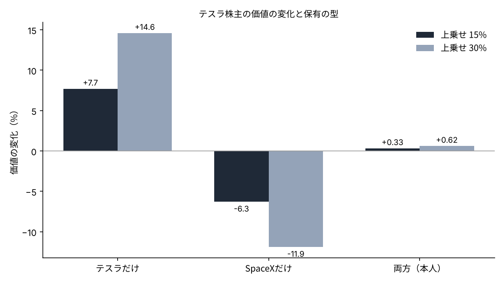
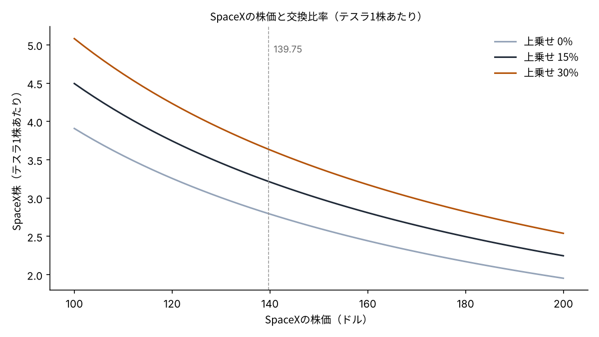

テスラとSpaceXが合併したら、テスラ1株はSpaceX何株になるのか――株主の取り分を10-Qの株数で試算する
テスラとSpaceXの合併の協議が進み、早ければ12月にも史上最大の案件として発表される可能性があると報じられた[1]。両社の取締役会は独立取締役の特別委員会を設け、交換比率と統治の形を話し合っているという[1]。
合併の話で、株主にとっていちばん大きいのは交換比率である。テスラの株主は、自分の1株がSpaceXの何株に替わるのかで、取り分が決まる。
本稿の問いは、テスラ1株がSpaceX何株になるのか、そしてその比率で、テスラの株主・SpaceXの株主・両方を持つ株主の取り分がどれだけ動くのかである。
- 11月11日の株価（テスラ390.84ドル、SpaceX139.75ドル）なら、上乗せ（プレミアム）なしの交換比率は1株＝約2.80株、15%上乗せで約3.22株、30%上乗せで約3.64株になる。
- 15%の上乗せでは、テスラの株主の価値は約7.7%増え、SpaceXの株主の価値は約6.3%減る。上乗せは新しい価値ではなく、2つの株主の間での移しかえである。
- 両社をほぼ同じ額で持つ株主（SpaceX1,250株・テスラ400株）では、15%上乗せでも価値の変化は+0.33%にとどまる。両方を持つと、比率の当たり外れはほとんど打ち消し合う。

問いと背景
本稿でいう「交換比率」とは、合併のとき、消える側の会社の株1株に対して、残る側の会社の株を何株渡すかの比率である。ここでは、SpaceXがテスラを買い、テスラの株主にSpaceXの株を渡す形を考える。
「プレミアム（上乗せ）」とは、買う側が、買われる側の今の株価より高く払う上乗せ分のことである。上場企業の買収では、買われる側の株主の賛成を得るために、上乗せを付けるのが普通とされる[6]。
この問いが今重要なのは、報道が具体的な比率の数字にまで進み始めたからだ。バロンズの試算では、テスラ株主に15%の上乗せを払う場合、SpaceXの株価が200ドルならテスラ1株あたり約2.3株、140ドルなら約3.2株になるという[2]。
SpaceXの株価は6月の上場直後の高値から大きく下げており、株価そのものが比率を左右する。比率は上乗せの率と、2社の株価の比の2つで決まる。どちらの数字が動くと、誰の取り分がどれだけ動くのかを確かめる。
データと方法
株数は、両社の10-Q（四半期報告書）の表紙に書かれた発行済株式数を使った。SpaceXは2026年10月15日時点で13,581,063,709株[3]、テスラは同じ10月15日時点で3,952,757,946株である[4]。
株価は、11月11日の終値として野村證券の預り資産の参考時価を使った。テスラは390.84ドル、SpaceXは139.75ドルである。時価総額にすると、テスラは約1.54兆ドル、SpaceXは約1.90兆ドルになる。
式は次のとおりである。交換比率＝（1＋上乗せ率）×テスラの株価÷SpaceXの株価。合併後の会社の価値は、2社の時価総額の合計に等しいと置いた（相乗効果はゼロと仮定）。合併後の1株の価値＝合計の時価総額÷（SpaceXの株数＋交換比率×テスラの株数）。
上乗せ率は0%・15%・30%の3通り、SpaceXの株価は100ドル・139.75ドル・200ドルの3通りを置いた。15%はバロンズの試算と同じ値で、30%は過去の上場企業の買収でよく見られる上乗せの水準に近い値として置いた[6]。
結果
まず、今の株価のままで比率を出した。上乗せなしなら、テスラ1株はSpaceX約2.80株になる。15%上乗せで約3.22株、30%上乗せで約3.64株である。バロンズの「140ドルなら約3.2株」とほぼ一致する[2]。
| 上乗せ率 | 交換比率 | テスラ400株が受け取るSpaceX株 | 合併後の1株の価値 |
|---|---|---|---|
| 0% | 2.797 | 1,119株 | 139.75ドル |
| 15% | 3.216 | 1,286株 | 130.94ドル |
| 30% | 3.636 | 1,454株 | 123.17ドル |
上乗せを払うと、テスラの株主が受け取る株は増える。しかし、合併後の会社の価値は変わらないので、1株あたりの価値はそのぶん薄まる。15%の上乗せでは、合併後の1株の価値は139.75ドルから130.94ドルへ下がる。

株主の種類ごとに価値の変化を並べると、構造がはっきりする。15%の上乗せでは、テスラだけを持つ株主は約7.7%得をし、SpaceXだけを持つ株主は約6.3%損をする。30%では、それぞれ約14.6%の得と約11.9%の損になる。
2社の時価総額を足すと、合併後の会社の価値は約3.44兆ドルになる。上乗せがあってもなくても、この合計は変わらない。変わるのは、その合計を2つの株主の間でどう分けるかだけである。
一方、SpaceXを1,250株、テスラを400株持つ株主では、11月11日の価値は約33.1万ドルで、2社の額はほぼ同じである。この株主の価値の変化は、15%上乗せで+0.33%（約1,096ドル）、30%上乗せで+0.62%（約2,062ドル）にとどまった。
感度分析
次に、SpaceXの株価を動かした。株価が100ドルまで下がると、15%上乗せの比率は約4.50株になり、テスラ400株は約1,798株に替わる。株価が200ドルなら、比率は約2.25株、受け取るのは約899株である。

合併後の会社の中で、もとのテスラの株主が持つ割合も動く。今の株価で15%上乗せなら約48.3%だが、SpaceXの株価が100ドルなら約56.7%、200ドルなら約39.5%になる。SpaceXの株価が低い時期に比率を決めるほど、テスラの株主の割合は大きくなる。
両方を持つ株主について、もう一歩進めた。口座の中でテスラが占める割合をwとすると、15%上乗せのときの価値の変化はおよそ「w×7.7%−（1−w）×6.3%」になる。これがゼロになるのはwが約45%のときで、30%上乗せでもほぼ同じ約45%になる。
| 口座の中のテスラの割合 | 15%上乗せでの価値の変化 | 30%上乗せでの価値の変化 |
|---|---|---|
| 20% | 約−3.5% | 約−6.6% |
| 45% | ほぼ0% | ほぼ0% |
| 47.2%（本人の口座） | 約+0.3% | 約+0.6% |
| 80% | 約+4.9% | 約+9.3% |
言いかえると、口座の中でテスラが約45%より多い株主は上乗せで得をし、少ない株主は損をする。上乗せの率が大きいほど、その差は大きく開く。半々に近い株主ほど、比率の議論から距離を置ける。
つまり、テスラの株主にとっての比率の良し悪しは、上乗せの率と同じくらい、比率を決める日のSpaceXの株価で決まる。比率が発表されるまでの株価の動きも、取り分に直接入ってくる。
考察
反対の見方もある。合併には、テスラの電気自動車とロボット、SpaceXの通信と計算資源を一つにまとめる相乗効果がありうる。その効果が大きければ、合併後の会社の価値は2社の合計を上回り、上乗せを払っても両方の株主が得をする可能性がある。本稿は相乗効果をゼロと置いたので、この上振れを含んでいない。
逆の方向のリスクもある。JPモルガンは、テスラの中国事業とSpaceXの国防の契約を切り分ける難しさを、合併の障害として挙げている[1]。規制や契約の調整に時間がかかれば、発表が2027年にずれ込む可能性もある[1]。
データの限界も書いておく。株数は10月15日時点で、その後の株式報酬や新しい株の発行は入っていない。株価は1日の終値で、比率が決まる日の株価とは違う。マスク氏はSpaceXの株の約44.7%を持つとされ、議決権の扱いによっては、比率以外の条件が株主の取り分を左右する[5]。
比率のほかにも、株主の取り分を左右する条件はある。マスク氏のテスラでの報酬の約束が合併後にどう引き継がれるか、合併後の取締役会を誰が占めるか、種類株の議決権をどう扱うかである。これらは比率の数字には表れないが、長く持つ株主にとっては比率と同じくらい重い。
答え合わせの基準は、特別委員会が示す比率と、その根拠に使った株価の日付である。比率が3.2株を大きく上回ればテスラの株主に、大きく下回ればSpaceXの株主に寄った条件と読める。
結論
交換比率は、上乗せの率と2社の株価の比で決まる。今の株価なら1株＝約2.8〜3.6株の範囲になる。上乗せは新しい価値を生むものではなく、テスラの株主とSpaceXの株主の間で価値を移す仕組みである。2社をほぼ同じ額で持つ株主には、その移しかえの影響がほとんど残らない。比率を当てにいくより、口座の中の割合を先に決めておくほうが、合併の発表に振り回されにくい。
僕はこう見ている
僕はテスラを400株、SpaceXを1,250株持っている。テスラの株主として、いちばん見ているのは交換比率で、テスラに投資してよかったと思える比率にしてほしいと思っている。ただ、比率はどちらかに有利になるしかなく、両方を持っていれば損はしないだろうと考えてきた。今回の試算で、その感覚は数字でも確かめられた。だから僕は、発表の日も何も足さず、何も売らない。
出典
- Yahoo Finance（Bloomberg配信）「SpaceX, Tesla in talks on record merger」2026-11-12 https://finance.yahoo.com/markets/stocks/articles/spacex-tesla-talks-record-merger-202235758.html
- Yahoo Finance（Barron's）「SpaceX stock slump complicates Elon Musk merger」2026-11-12 https://finance.yahoo.com/markets/stocks/articles/spacex-stock-slump-complicates-elon-144818205.html
- Space Exploration Technologies Corp.「Form 10-Q（2026年9月30日終了四半期）」（発行済株式数の出典として FourWeekMBA の引用を確認） https://fourweekmba.com/ai-musks-spacex-holdings-were-worth-862b-at-fridays-close/
- Tesla, Inc.「Form 10-Q（2026年9月30日終了四半期）」2026-10-22（発行済株式数の出典として Kalkine の引用を確認） https://www.kalkine.com/news/announcements/tesla-q3-2026-revenue-flat-rd-surges-to-276b
- Space Exploration Technologies Corp.「Form 424B4（目論見書）」2026-06-12／Elon Musk「Form 4」2026-06-17（保有株数） https://fourweekmba.com/ai-musks-spacex-holdings-were-worth-862b-at-fridays-close/
- Betton, S., Eckbo, B. E., & Thorburn, K. S.「Corporate Takeovers」Handbook of Empirical Corporate Finance, Vol.2, 2008 https://doi.org/10.1016/B978-0-444-53265-7.50006-1
写真：Unsplash。図はYUKI CAPITALが作成
日々の数字と判断は、Xで記録している。